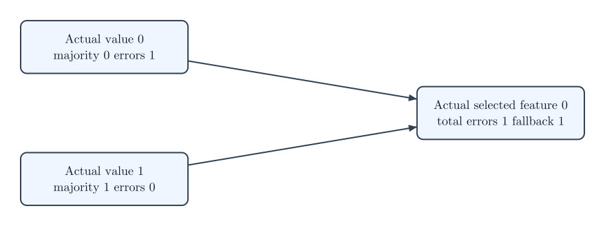
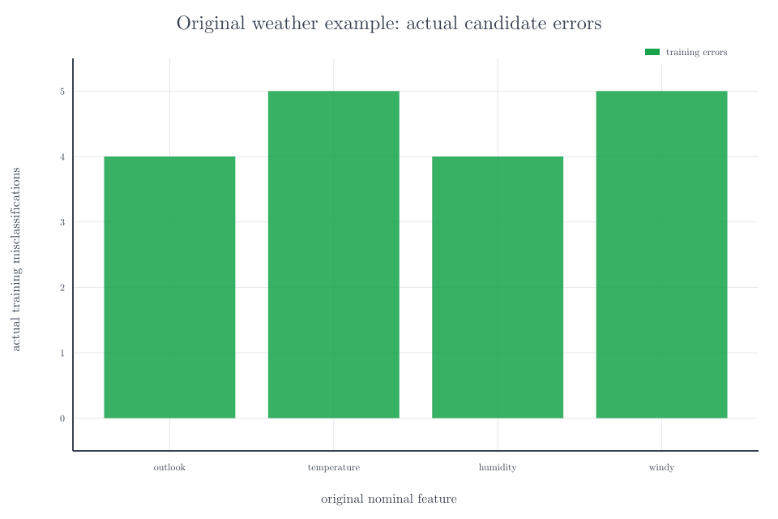
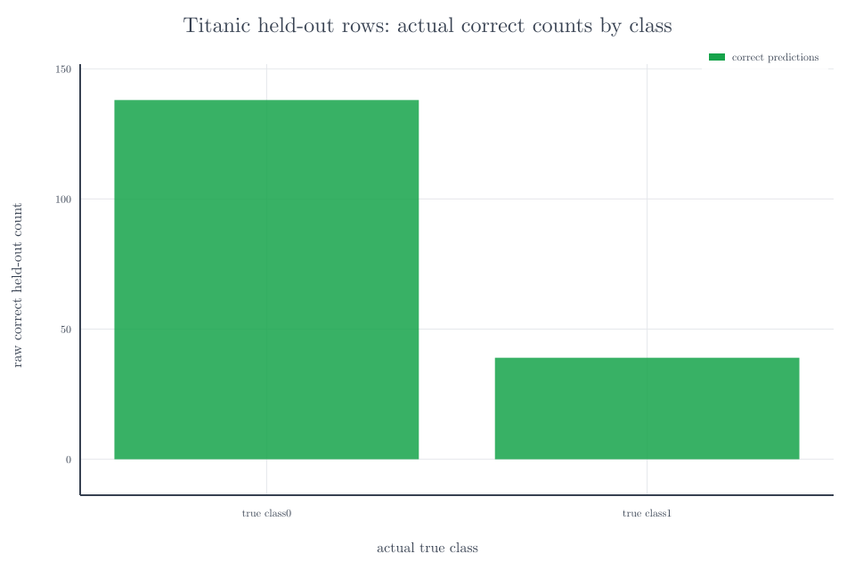
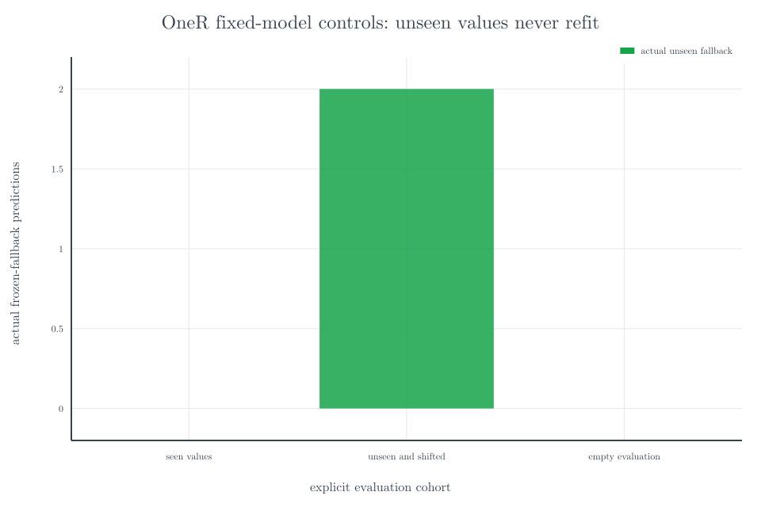

OneR: one nominal attribute, actual majority rules
Abstract
Derive the empirical best single categorical attribute rule from tiny bucket counts, then retain the original fourteen-row weather illustration. A separate native Titanic training/test study distinguishes candidate training error from held-out prediction, with raw confusion counts and an explicit frozen fallback for unseen categories.
Minimize misclassification within each feature value
Let C_jvc count training rows with feature j equal to nominal value v and class c. For a fixed j, choosing one prediction per value independently minimizes unweighted training errors:
The native tie policy chooses the smallest integer class within a tied bucket, and the first original feature among equal candidate errors. An unseen selected-feature value uses the frozen global training-majority class, again breaking a class tie by the smallest integer label. Integers are category codes: their numeric order does not create intervals or distances. This implementation is the nominal-attribute rule learner; it does not fit continuous-value discretization or claim performance close to more complex classifiers on arbitrary data.
A tiny tied bucket and an unambiguous bucket
For feature values[0,0,1,1] and labels[0,1,1,1], value0 has one example of each class and chooses0; value1 chooses1. The selected rule has one training error and global fallback1. Both the diagram and table read the actual bucket tallies produced during fitting.
#include <dm/dm.hpp>
int main() {
std::filesystem::create_directories("build");
auto t =
dm::algorithms::one_r_train_trace({{0}, {0}, {1}, {1}}, {0, 1, 1, 1});
dm::graphics::Diagram d;
auto &b = t.candidates[0].buckets;
d.node("zero", {0, 1.5},
std::format("Actual value {}\nmajority {} errors {}", b[0].value,
b[0].prediction, b[0].errors));
d.node("one", {0, -1.5},
std::format("Actual value {}\nmajority {} errors {}", b[1].value,
b[1].prediction, b[1].errors));
d.node("model", {9, 0},
std::format("Actual selected feature {}\ntotal errors {} fallback {}",
t.model.feature, t.model.errors, t.model.default_class));
d.edge("zero", "model").edge("one", "model");
std::print("| actual feature value | actual label | actual count | selected bucket prediction | bucket " "errors |\n| ---: | ---: | ---: | ---: | ---: |\n");
for (auto &v : b)
for (auto[label, count] : v.class_counts)
std::print("| {} | {} | {} | {} | {} |\n", v.value, label, count,
v.prediction, v.errors);
d.save_svg("build/one_r_tiny.svg");
}| actual feature value | actual label | actual count | selected bucket prediction | bucket errors |
|---|---|---|---|---|
| 0 | 0 | 1 | 0 | 1 |
| 0 | 1 | 1 | 0 | 1 |
| 1 | 1 | 2 | 1 | 0 |

Retain the original fourteen-row weather illustration
The original categorical columns are outlook(sunny0,overcast1,rain2), temperature(hot0,mild1,cool2), humidity(high0,normal1), and windy(false0,true1); class0 means no play and1 means play. The reusable fixture retains all fourteen rows, labels and column order.
The report no longer refits four separately rebuilt one-column matrices to recover candidate errors. The canonical training history already contains each candidate’s actual bucket counts and error sum. Selecting a feature by those training errors does not turn its resubstitution accuracy into an independent estimate of predictive performance. This small didactic table has no held-out role in the Titanic study below.
#include <dm/dm.hpp>
int main() {
std::filesystem::create_directories("build");
auto data = dm::algorithms::one_r_weather_data();
auto t = dm::algorithms::one_r_train_trace(data.features, data.labels);
std::vector<double> errors;
std::print("Actual selected feature: {}. Training errors: {} of {}. Training accuracy: {:.9f}. Frozen " "fallback: {}.\n\n",
data.names[t.model.feature], t.model.errors, t.model.total,
t.model.accuracy(), t.model.default_class);
std::print("| original candidate | actual training errors | actual value buckets |\n| --- | ---: | ---: " "|\n");
for (auto &c : t.candidates) {
errors.push_back(c.errors);
std::print("| {} | {} | {} |\n", data.names[c.feature], c.errors,
c.buckets.size());
}
std::print("\n| selected feature value | actual class prediction |\n| ---: | ---: |\n");
for (auto[value, label] : t.model.value_to_class)
std::print("| {} | {} |\n", value, label);
auto p =
dm::graphics::RPlot::barplot(errors, data.names, "training errors");
p.title("Original weather example: actual candidate errors").x_label(
"original nominal feature").y_label("actual training misclassifications").save_svg("build/one_r_weather.svg");
}Actual selected feature: outlook. Training errors: 4 of 14. Training accuracy: 0.714285714. Frozen fallback: 1.
| original candidate | actual training errors | actual value buckets |
|---|---|---|
| outlook | 4 | 3 |
| temperature | 5 | 3 |
| humidity | 4 | 2 |
| windy | 5 | 2 |
| selected feature value | actual class prediction |
|---|---|
| 0 | 0 |
| 1 | 1 |
| 2 | 1 |

Fit on native Titanic training rows, then freeze
Use dm::datasets::titanic() directly and the same reproducible, unstratified70/30 split used by the ZeroR report: test fraction.3, seed2024. The624 training passengers choose the rule and every class/value majority; the267 test passengers are evaluated once with that rule frozen. Predictors Pclass,SibSp andParch are complete numeric integer categories. Count-valued SibSp/Parch are treated nominally here; no numeric distance, binning, imputation, test-dependent encoding or response column is used as a predictor.
A ZeroR global-majority baseline is trained on the same training rows and evaluated on the same test rows. Neither selected-feature training accuracy nor a comparison on this one split establishes general superiority. Raw held-out confusion rows are true classes and columns are predicted classes; the bar chart shows correct counts by actual true class, so class imbalance remains visible.
#include <dm/dm.hpp>
int main() {
std::filesystem::create_directories("build");
auto[train, test] =
dm::stats::train_test_split(dm::datasets::titanic(), .3, 2024);
auto fit =
dm::algorithms::one_r_dataframe(train, {"Pclass", "SibSp", "Parch"},
"Survived");
auto held = dm::algorithms::one_r_dataframe(test, fit.names, "Survived");
auto t = dm::algorithms::one_r_train_trace(fit.features, fit.labels);
auto evaluation =
dm::algorithms::one_r_evaluate(t.model, held.features, held.labels);
auto zero = dm::algorithms::zero_r_train(fit.labels);
std::print("Training rows: {}. Held-out rows: {}. Actual selected column: {}. Training accuracy: " "{:.9f}. Fixed-model test accuracy: {:.9f}. Unseen-value fallback rows: {}.\n\n",
fit.labels.size(), held.labels.size(),
fit.names[t.model.feature], t.model.accuracy(),
double(evaluation.correct) / evaluation.rows,
evaluation.fallbacks);
std::print("ZeroR on the identical frozen split:\n\n{}\n\n",
dm::algorithms::zero_r_evaluate(zero, test, "Survived").to_md(9));
std::print("| actual true class | actual predicted class | raw held-out count |\n| ---: | ---: | ---: " "|\n");
std::vector<double> correct;
std::vector<std::string> names;
for (std::size_t i = 0; i < evaluation.classes.size(); ++i) {
correct.push_back(evaluation.confusion[i][i]);
names.push_back(std::format("true class{}", evaluation.classes[i]));
for (std::size_t j = 0; j < evaluation.classes.size(); ++j)
std::print("| {} | {} | {} |\n", evaluation.classes[i],
evaluation.classes[j], evaluation.confusion[i][j]);
}
auto p =
dm::graphics::RPlot::barplot(correct, names, "correct predictions");
p.title("Titanic held-out rows: actual correct counts by class").x_label(
"actual true class").y_label("raw correct held-out count").save_svg(
"build/one_r_titanic.svg");
}Training rows: 624. Held-out rows: 267. Actual selected column: Pclass. Training accuracy: 0.685897436. Fixed-model test accuracy: 0.662921348. Unseen-value fallback rows: 0.
ZeroR on the identical frozen split:
| prediction | training_rows | training_accuracy | evaluated_rows | observed_classes | accuracy | balanced_accuracy |
|---|---|---|---|---|---|---|
| 0 | 624 | 0.613782051 | 267 | 2 | 0.621722846 | 0.5 |
| actual true class | actual predicted class | raw held-out count |
|---|---|---|
| 0 | 0 | 138 |
| 0 | 1 | 28 |
| 1 | 0 | 62 |
| 1 | 1 | 39 |

Unseen categories and complete input contracts
The following model is trained on feature0→class0 and feature1→class1. Its tied global training majority chooses0. Evaluating on a cohort containing mostly true class1 does not change that fallback. An unseen feature2 therefore still predicts0, even when the evaluation majority differs. The empty evaluation convention returns zero rows/counts without defining an empirical accuracy.
Complete matching feature/label counts and rectangular shape are checked before training/evaluation. Nonempty fitting requires at least one column. Empty fitting returns a normalized empty model(total0/errors0/training accuracy0), and attempting to predict from it throws. A prediction row must contain the selected index; a malformed or inconsistent model is rejected. The DataFrame adapter requires distinct nonresponse predictor names and finite integral int-range cells; it performs no dropping or rounding.
For D attributes and N rows, nested ordered maps cost O(DN log N) work and O(N) candidate state plus the selected rule. The optional history owns original entriesND+N, candidate records, bucket class-count pairs and the selected map. Its logical quota counts ND+N+2R plus each candidate1 and each bucket1+2K; default1000000 and zero disables it. Admission precedes retained copies and appends, with no partial trace on failure. This policy is not bytes, node allocation cost or peak RAM. Prediction costs O(log V) for V selected feature values; no training data or caller references remain in the model.
#include <dm/dm.hpp>
int main() {
std::filesystem::create_directories("build");
auto model = dm::algorithms::one_r_train({{0}, {1}}, {0, 1});
std::vector<dm::algorithms::OneREvaluation> evaluations{
dm::algorithms::one_r_evaluate(model, {{0}, {1}}, {0, 1}),
dm::algorithms::one_r_evaluate(model, {{2}, {2}, {1}}, {1, 1, 1}),
dm::algorithms::one_r_evaluate(model, {}, {})
};
std::vector<std::string> labels{"seen values", "unseen and shifted",
"empty evaluation"};
std::vector<double> fallbacks;
std::print("Frozen training fallback remains {}.\n\n", model.default_class);
std::print("| evaluation control | actual evaluated rows | actual correct rows | actual fallback rows " "|\n| --- | ---: | ---: | ---: |\n");
for (std::size_t i = 0; i < evaluations.size(); ++i) {
auto &e = evaluations[i];
fallbacks.push_back(e.fallbacks);
std::print("| {} | {} | {} | {} |\n", labels[i], e.rows, e.correct,
e.fallbacks);
}
auto p =
dm::graphics::RPlot::barplot(fallbacks, labels, "actual unseen fallback");
p.title("OneR fixed-model controls: unseen values never refit").x_label(
"explicit evaluation cohort").y_label("actual frozen-fallback predictions").save_svg("build/one_r_controls.svg");
}Frozen training fallback remains 0.
| evaluation control | actual evaluated rows | actual correct rows | actual fallback rows |
|---|---|---|---|
| seen values | 2 | 2 | 0 |
| unseen and shifted | 3 | 1 | 2 |
| empty evaluation | 0 | 0 | 0 |

Verification
This ten-report batch passes 50 CTest cases, 25 directly instrumented ASan/UBSan
cases, 174 compiled and executed public examples, 707/707 scoped documentation
definitions and ten representative clangd hovers. Independent Python checks
verify 5662 records with 27916 checks: optimal prefix-code costs, train-only
Titanic category counts and held-out confusion, and all 5001 actual original
Lorenz RK4 steps. Frozen valid-input comparisons cover all ten producers, with
intentional guard, ownership, arithmetic and endpoint corrections stated
separately. Twelve checkout headers and twelve byte-identical installed
development headers compile independently; an installed-header native consumer
links and runs. All 40 complete programs execute, and 40 native figures have
been visually reviewed. HTML/Markdown exports preserve computed results and
image bytes. These are scoped native checks. Receipts:
build/mepml-conversion/batch-264-273/.